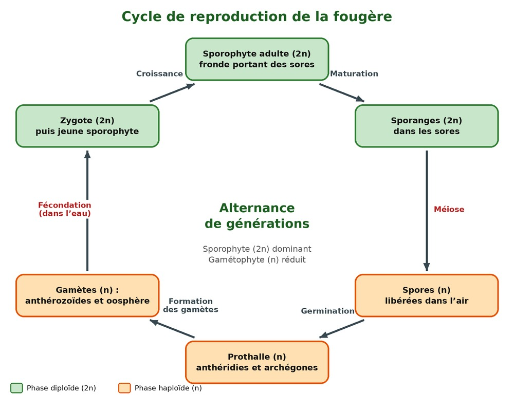

Fougères
« Avec leurs vaisseaux et leurs vraies racines, les végétaux ont pu se dresser, grandir et conquérir durablement la terre ferme. » 🌿
L'arrivée des fougères (ptéridophytes) marque l'apparition des premiers végétaux à vaisseaux conducteurs : ce sont des plantes dotées de vraies racines, d'une tige et de feuilles, capables d'atteindre une grande taille.
Le problème résolu : la conduction de l'eau et le soutien
Chez les mousses, l'eau circule lentement de cellule en cellule, ce qui limite la taille de la plante. Les fougères ont résolu ce problème grâce aux vaisseaux conducteurs : le xylème transporte l'eau et les sels minéraux, le phloème distribue les sucres. Renforcé par la lignine, le xylème soutient aussi la plante, qui peut ainsi se dresser.

Coordonnées GPS
| Latitude | Longitude | Précision (m) | Milieu |
|---|---|---|---|
| 6.8955 | -5.2267 | 1.74 | sec |